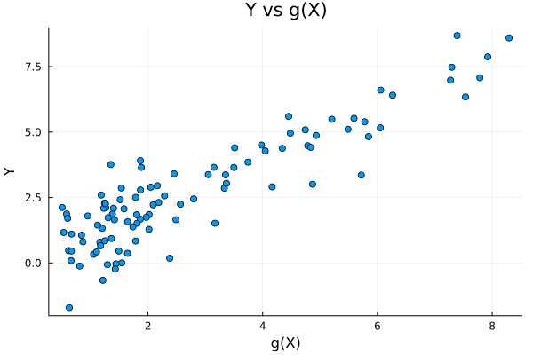

Penalized Linear Regressions: A Simulation Experiment
Contents
Julia code replication of: ” https://www.kaggle.com/victorchernozhukov/r-notebook-linear-penalized-regs “
This notebook contains an example for teaching.
Penalized Linear Regressions: A Simulation Experiment#
Data Generating Process: Approximately Sparse#
# #Needed Packages and extra just in case
# Pkg.add( "GLMNet" )
# Pkg.add("Plots")
# Pkg.add("Lathe")
# Pkg.add("GLM")
# Pkg.add("StatsPlots")
# Pkg.add("MLBase")
# Pkg.add("CSV")
# Pkg.add("DataFrames")
# Pkg.add("Dates")
# Pkg.add("Plots")
# Pkg.add("Lasso")
# Pkg.add( "Distributions" )
using Pkg
using CSV
using DataFrames
using Dates
using Plots
# Load the installed packages
using DataFrames
using CSV
using Plots
using Lathe
using GLM
using Statistics
using StatsPlots
using MLBase
using Lasso
# Import functions
using LinearAlgebra, GLM, DataFrames, Statistics, Random
using Distributions
using GLMNet
┌ Info: Precompiling Plots [91a5bcdd-55d7-5caf-9e0b-520d859cae80]
└ @ Base loading.jl:1423
Random.seed!(1234)
TaskLocalRNG()
n = 100
p = 400
Z = rand( Uniform( 0, 1 ), n ) .- 0.5
W = reshape( rand( Uniform( 0, 1 ), n * p ), n, p )
beta = ( 1 ./ range( 1, p, step = 1 ) ) .^ 2
gX = exp.( Z .* 4 ) + W * beta
X = hcat( Z, Z .^ 2, Z .^ 3, W )
mean = 0
sd = 1
Y = gX + randn( n )
print( "theoretical R2:", var(gX) / var( Y ) )
plt = plot( gX, Y,
seriestype = :scatter,
title = "Y vs g(X)",
label = "",
lw = 3)
xlabel!( "g(X)" )
ylabel!( "Y" )
display( plt )

theoretical R2:0.9116449856603569
We use package Glmnet to carry out predictions using cross-validated lasso, ridge, and elastic net
fit_lasso_cv = glmnetcv(X, Y, alpha = 1)
fit_ridge = glmnetcv(X, Y, alpha=0)
fit_elnet = glmnetcv(X, Y, alpha=.5)
yhat_lasso_cv = GLMNet.predict( fit_lasso_cv, X )
yhat_ridge = GLMNet.predict( fit_ridge, X )
yhat_elnet = GLMNet.predict( fit_elnet, X )
data = DataFrame( lasso_cv = ( gX - yhat_lasso_cv ) .^ 2,
ridge = ( gX - yhat_ridge ) .^ 2,
elnet = ( gX - yhat_elnet ) .^ 2 )
lasso_mse_fit = fit( LinearModel, @formula( lasso_cv ~ 1 ), data )
ridge_mse_fit = fit( LinearModel, @formula( ridge ~ 1 ), data )
elnet_mse_fit = fit( LinearModel, @formula( elnet ~ 1 ), data )
MSE_lasso_cv = [ GLM.coef( lasso_mse_fit )[ 1 ], stderror( lasso_mse_fit )[1] ]
MSE_ridge = [ GLM.coef( ridge_mse_fit )[ 1 ], stderror( ridge_mse_fit )[1] ]
MSE_elnet = [ GLM.coef( elnet_mse_fit )[ 1 ], stderror( elnet_mse_fit )[1] ]
Here we compute the lasso and ols post lasso using plug-in choices for penalty levels, using package hdm
Next we code up lava, which alternates the fitting of lasso and ridge
There is no index in DataFrames in Julia. Explanation here
Pkg.add( "Latexify" )
Resolving package versions...
Updating `C:\Users\Anzony\.julia\environments\v1.7\Project.toml`
[23fbe1c1] + Latexify v0.15.12
No Changes to `C:\Users\Anzony\.julia\environments\v1.7\Manifest.toml`
using Latexify
table = zeros( Float64, 6, 2 )
table[1,1:2] = MSE_lasso_cv
table[2,1:2] = MSE_ridge
table[3,1:2] = MSE_elnet
table[4,1:2] = MSE_lasso
table[5,1:2] = MSE_lasso_post
table[6,1:2] = MSE_lava
df = DataFrame( hcat( [ "Cross-Validated Lasso",
"Cross-Validated ridge",
"Cross-Validated elnet",
"Lasso",
"Post-Lasso","Lava" ], table
) ,
[ "Model", "MSA", "S.E. for MSA" ] )
6×2 Matrix{Float64}:
0.0 0.0
0.0 0.0
0.0 0.0
0.0 0.0
0.0 0.0
0.0 0.0
Latexify.set_default(; starred=true)
AssertionError: latexify does not support objects of type DataFrame.
latexify( df , env= :raw )|> print
AssertionError: latexify does not support objects of type DataFrame.
Stacktrace:
[1] _latexraw(args::DataFrame; kwargs::Base.Pairs{Symbol, Any, Tuple{Symbol, Symbol}, NamedTuple{(:env, :starred), Tuple{Symbol, Bool}}})
@ Latexify C:\Users\Anzony\.julia\packages\Latexify\v4lfi\src\latexraw.jl:109
[2] process_latexify(args::DataFrame; kwargs::Base.Pairs{Symbol, Any, Tuple{Symbol, Symbol}, NamedTuple{(:env, :starred), Tuple{Symbol, Bool}}})
@ Latexify C:\Users\Anzony\.julia\packages\Latexify\v4lfi\src\latexify_function.jl:25
[3] latexify(args::DataFrame; kwargs::Base.Pairs{Symbol, Symbol, Tuple{Symbol}, NamedTuple{(:env,), Tuple{Symbol}}})
@ Latexify C:\Users\Anzony\.julia\packages\Latexify\v4lfi\src\latexify_function.jl:3
[4] top-level scope
@ In[268]:1
[5] eval
@ .\boot.jl:373 [inlined]
[6] include_string(mapexpr::typeof(REPL.softscope), mod::Module, code::String, filename::String)
@ Base .\loading.jl:1196
DataFrame(grp=repeat(1:2, 3), x=6:-1:1, y=4:9, z=[3:7; missing], id='a':'f')
6 rows × 5 columns
| grp | x | y | z | id | |
|---|---|---|---|---|---|
| Int64 | Int64 | Int64 | Int64? | Char | |
| 1 | 1 | 6 | 4 | 3 | a |
| 2 | 2 | 5 | 5 | 4 | b |
| 3 | 1 | 4 | 6 | 5 | c |
| 4 | 2 | 3 | 7 | 6 | d |
| 5 | 1 | 2 | 8 | 7 | e |
| 6 | 2 | 1 | 9 | missing | f |
methods( df )
# 0 methods: